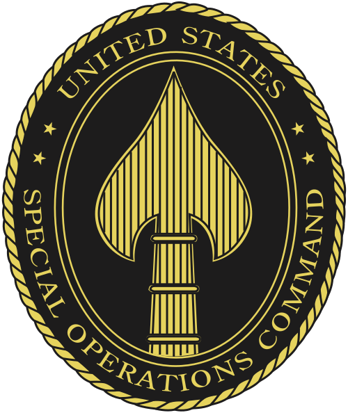
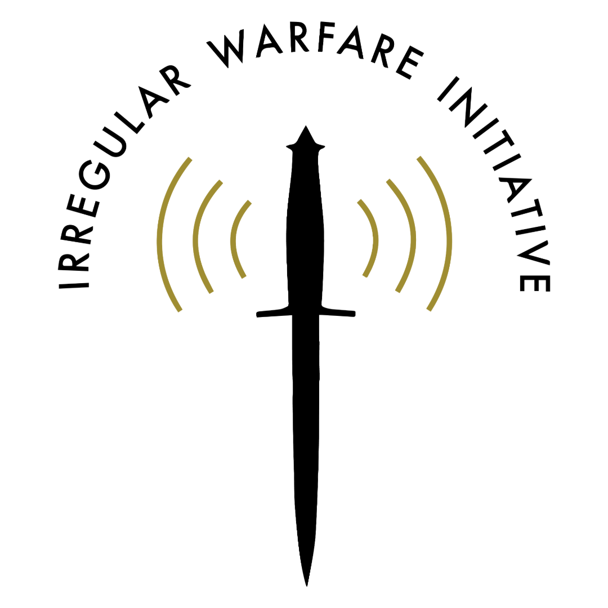

The environment is moving toward evidence-backed compliance.
Critical minerals, defense components, nuclear supply chains, and data centers all require better proof of origin, custody, transformation, and compliance.
Strategic Discussion Brief
A strategic assessment of SAGINT's market opportunity, execution risks, and the operating architecture required to scale from founder-led momentum to disciplined execution.
Executive Summary
Critical minerals, defense components, nuclear supply chains, and data centers all require better proof of origin, custody, transformation, and compliance.
The company appears to be positioning itself as the trusted infrastructure layer that makes strategic assets compliant, bankable, insurable, and enforceable.
SAGINT should prove how physical truth enters the digital record, how ASTM maps to existing standards, and how adoption scales through complete corridors.
Founder energy, capital, policy momentum, standards work, and node growth could outpace the company's structure and talent systems.
Tier 1: The Environment
The core question is no longer simply whether a supply chain can be mapped. The strategic question is whether the market can trust the claims attached to a physical asset, component, batch, or shipment.
Banks and insurers cannot underwrite what they cannot verify. Defense agencies cannot enforce origin restrictions without transaction-level visibility. Sanctions regimes weaken when restricted goods can be relabeled, blended, or routed through third countries.
A tokenized digital twin can be powerful, but only if the physical-world evidence behind it is trusted. The ledger can make a record tamper evident; it cannot, by itself, prove the initial claim is true.
Tier 2: SAGINT's Theory of the Case
The strongest version of SAGINT's pitch is not “we track minerals.” It is: “we create the trusted, privacy-preserving, legally enforceable verification layer that lets strategic assets become financeable, insurable, compliant, and governable.”

| Layer | Existing ecosystem players | SAGINT's intended role |
|---|---|---|
| Physical supply chain | Miners, refiners, processors, manufacturers, logistics providers | Does not physically touch assets |
| Validation | Labs, sensors, auditors, ratings agencies, assurance firms | Integrates independent validators |
| Digital record | Traceability tools, product passports, compliance platforms | Creates tokenized asset records or controllable electronic records |
| Finance | Banks, insurers, reinsurers, commodity-linked products | Provides trusted data layer for underwriting |
| Standards | ASTM, ISO, OECD, DFARS, EU DPP frameworks | Aligns and operationalizes compliance |
| Government | DoD, Commerce, Treasury, State, allied governments | Provides enforceable visibility and compliance infrastructure |
| Economic warfare | Sanctions, export controls, FEOC rules, procurement restrictions | Makes compliance actionable at asset and transaction level |
Verification enables compliance. Compliance enables finance and insurance. Finance and insurance enable market depth. Market depth enables allied alternatives. Allied market infrastructure creates strategic leverage.
Roadmap Assessment
Ambition
Become a trusted verification layer for a meaningful share of compliant rare earth flows.
Next proof point
Demonstrate value in a narrow corridor such as neodymium oxide, rare earth magnets, tantalum, or tungsten.
Ambition
Create a standard recognized by government and adopted by industry.
Next proof point
Show how ASTM maps to ISO, OECD, EU product passport rules, DFARS, FEOC, and sanctions requirements.
Ambition
Become infrastructure that banks, insurers, and assurance firms trust when underwriting strategic assets.
Next proof point
Show that SAGINT records reduce underwriting friction, improve insurability, or change procurement eligibility.
Ambition
Critical minerals first, then data centers, then DoD and broader U.S. Government traceability.
Next proof point
Sequence the value chains so the first wedge creates reusable infrastructure rather than scattered pilots.
Constructive Red Team
These are not objections to the concept. They are the areas SAGINT should harden to move from compelling thesis to trusted market infrastructure.
The token architecture is only as strong as the physical-world evidence that enters it. SAGINT should make the validator architecture as clear as the digital record architecture.
Recommendation: create a Trusted Evidence Architecture for each asset class.
ASTM may be the right path, but SAGINT should avoid framing the issue as ASTM versus ISO. The stronger frame is interoperability across standards and regimes.
Recommendation: build a standards map across ASTM, ISO, OECD, EU DPP, DFARS, FEOC, and sanctions requirements.
One isolated node proves technical feasibility. A complete corridor proves market value. SAGINT needs enough adoption density to change finance, insurance, procurement, or compliance outcomes.
Recommendation: define minimum viable corridors around rare earth magnets, DFARS materials, or Africa-to-allied-market flows.
The Organizational Risk
Jacob's ability to connect technology, law, standards, national security, finance, critical minerals, China, Africa, and economic warfare is a strength. The next phase requires converting that energy into company-wide operating architecture.
The Operating System SAGINT Needs
The goal is to convert a founder-led strategic thesis into campaigns, cadence, decision rights, talent systems, and measurable execution. Click each step below for the operating logic behind it.
Talent Architecture
The company is recruiting across technical, financial, government, diplomatic, standards, and national security communities. The right team is a system, not a collection of credentials.
SAGINT appears to need people who can operate across engineering, finance, compliance, national security, international diplomacy, standards, insurance, and government adoption.
A deliberate assessment and selection model should define role profiles, trait-based criteria, scenario-based exercises, onboarding expectations, cultural norms, and kill criteria for bad fits.
Why Alex

SAGINT need
Relevant proof
SOCOM strategy and operational design work, including translating senior leader intent into strategy, campaign logic, stakeholder alignment, and execution mechanisms.

SAGINT need
Relevant proof
Special Forces leadership in ambiguous, partner-heavy environments where assessment, selection, onboarding, and culture determine performance.

SAGINT need
Relevant proof
Tampa Bay Sun FC Chief of Staff fellowship, building operating rhythms, SOPs, campaign governance, executive reporting, and cross-functional alignment.

SAGINT need
Relevant proof
Irregular Warfare Initiative development and partnerships work, creating sponsor systems while protecting credibility and mission alignment.
C-Suite Role Concept
The mandate is to own the strategy-to-execution system that allows SAGINT to scale.
Best fit if the role owns market architecture, government-industry-finance alignment, standards-to-adoption logic, strategic priorities, and narrative discipline.
Best fit if the role owns the conversion of strategy into operations, the operating cadence, talent architecture, campaign governance, and execution feedback loops.
Best fit if the role owns internal operating cadence, functional structure, execution management, team buildout, and company-wide accountability.
Build the operating system and talent architecture that allow SAGINT to scale from founder-led momentum to disciplined execution across technical development, node growth, standards adoption, financial integration, government adoption, international expansion, and team buildout.
How I Would Help
This is not a fixed implementation plan. It is the set of problems I would expect to help solve if Jacob and I determine there is a true C-suite strategy and operations fit.
Turn SAGINT's thesis into prioritized workstreams with objectives, owners, dependencies, and decision points.
Create the rhythm for leadership synchronization, campaign reviews, risk surfacing, and decision velocity.
Help the company move from everyone doing everything to clear ownership across product, standards, node growth, government, finance, and international efforts.
Define the traits, screens, scenarios, and onboarding path required to build a high-trust team-of-teams organization.
Shift from isolated node pursuit to corridor-based adoption that connects verified assets to buyers, financiers, insurers, regulators, or procurement requirements.
Keep each stakeholder lane connected to a single operating picture so momentum compounds rather than fragments.
Help SAGINT see where product maturity, standards adoption, government pathways, talent, and customer implementation create company-level risk.
Let Jacob spend more time on the highest-leverage founder activities while the company gains the structure to absorb success.
Closing Thesis
SAGINT's opportunity appears to be real because the verification layer is becoming market infrastructure. The strategic question is whether SAGINT can harden its assumptions, sequence adoption, build the right operating system, and recruit the team capable of scaling.
That is where I can help.